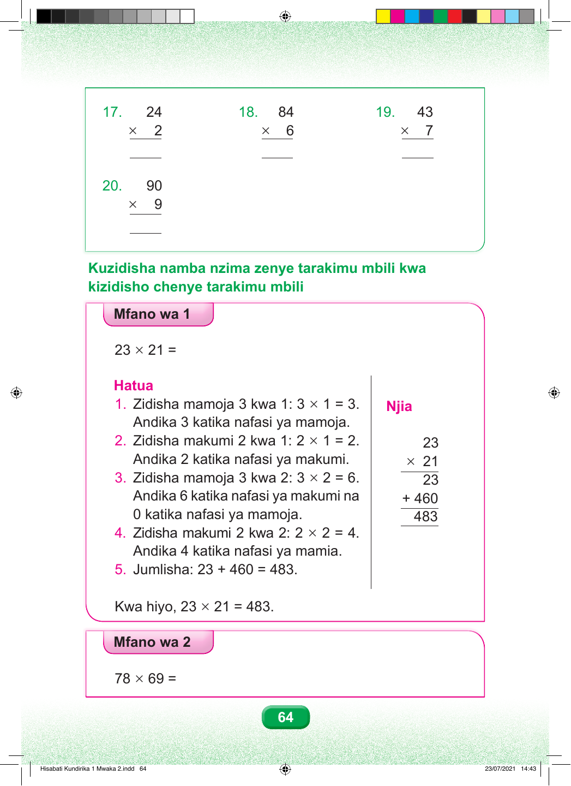

17. 24 18. 84 19. 43 × 2 × 6 × 7 20. 90 × 9 Kuzidisha namba nzima zenye tarakimu mbili kwa kizidisho chenye tarakimu mbili Mfano wa 1 23 × 21 = Hatua 1. Zidisha mamoja 3 kwa 1: 3 × 1 = 3. Njia Andika 3 katika nafasi ya mamoja. 2. Zidisha makumi 2 kwa 1: 2 × 1 = 2. 23 Andika 2 katika nafasi ya makumi. × 21 3. Zidisha mamoja 3 kwa 2: 3 × 2 = 6. 23 Andika 6 katika nafasi ya makumi na + 460 0 katika nafasi ya mamoja. 483 4. Zidisha makumi 2 kwa 2: 2 × 2 = 4. Andika 4 katika nafasi ya mamia. 5. Jumlisha: 23 + 460 = 483. Kwa hiyo, 23 × 21 = 483. Mfano wa 2 78 × 69 = 64 Hisabati Kundirika 1 Mwaka 2.indd 64 23/07/2021 14:43